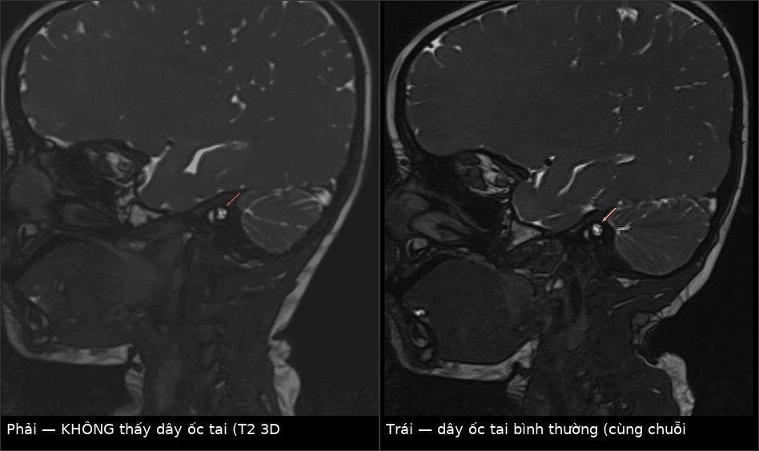
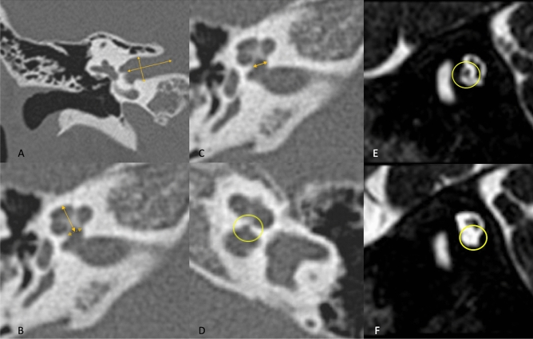
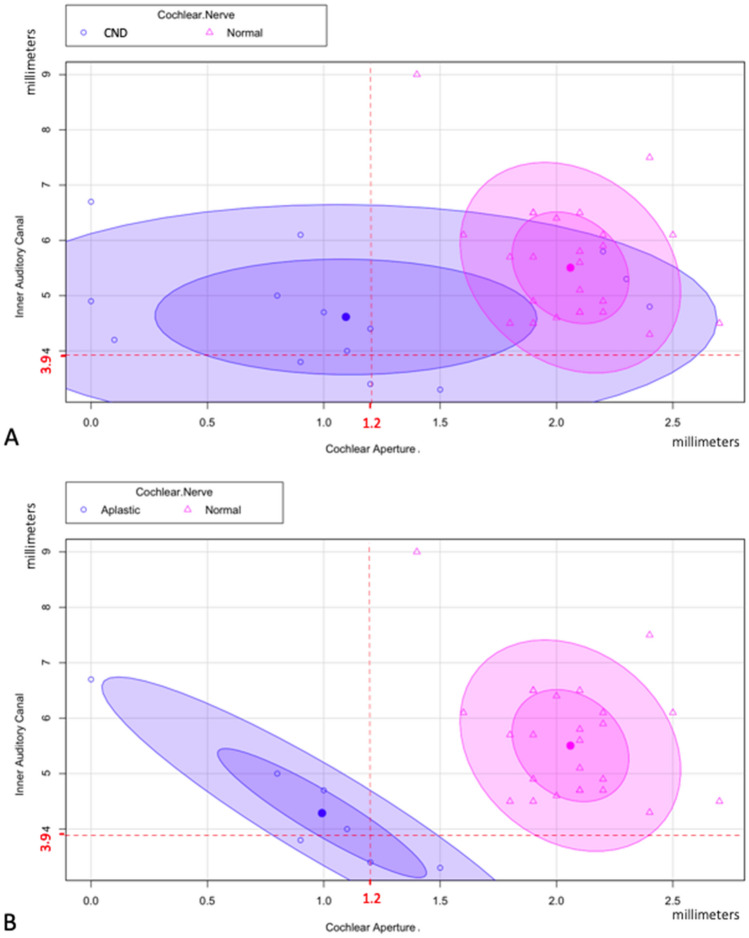
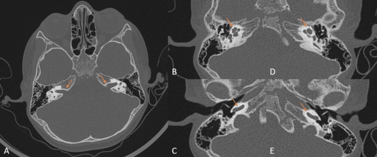
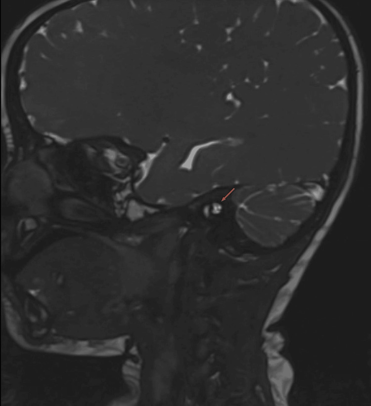
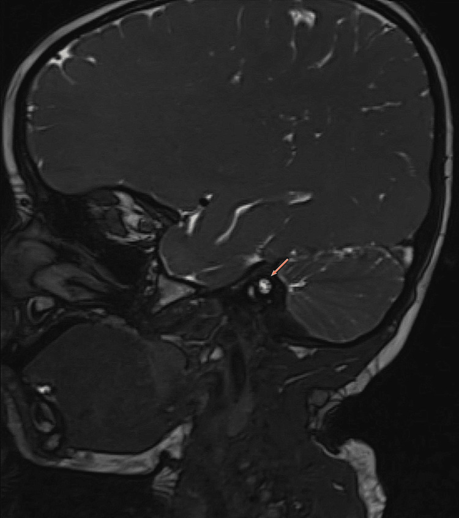

1971 — Bất sản / giảm sản dây thần kinh ốc tai (cochlear nerve deficiency): đếm bó dây trên CISS, ngưỡng lỗ ốc tai, và khi nào cấy ốc tai vẫn được
Tags: pattern:bat-san-day-oc-tai pattern:giam-san-day-oc-tai pattern:hep-lo-oc-tai pattern:hep-ong-tai-trong pattern:di-thinh-tiep-nhan vung:oc-tai vung:tai-trong score:IAM-nerve-grade protocol:MRI-CISS protocol:CT-xuong-da-lat-mong protocol:ABR
Mức chắc chắn (certainty): tổng hợp y văn (literature synthesis) — ghép 39 trẻ điếc một bên bẩm sinh có chụp CT + MRI (PMC7870947, CC BY), 188 tai / 105 trẻ CND theo hệ phân độ ống tai trong, trong đó 42 trẻ cấy ốc tai so với 24 trẻ chứng (PMC9813738, CC BY), 70 trẻ CND có mô hình học máy dự báo kết quả (PMC9260115, CC BY), 16 trẻ cấy ốc tai hai bên tuần tự (PMC13162032, CC BY-NC-ND), 48 trẻ với ABR/EABR (PMC13435270, CC BY), 13 bệnh nhân hội chứng khe mang–tai EYA1 (PMC13464796, CC BY), kỹ thuật ABI nhi (PMC12819425, CC BY) và một ca nguyên văn có ảnh CT bình thường nhưng MRI mất dây ốc tai (PMC11604252, CC BY).
Câu chốt: CT xương thái dương bình thường KHÔNG loại trừ bất sản dây thần kinh ốc tai. CT chỉ nhìn được vỏ xương (lỗ ốc tai, ống tai trong); dây thần kinh là mô mềm, chỉ hiện ra nhờ dịch não tủy sáng trên T2 3D CISS/FIESTA — dây thần kinh là khuyết tối nằm trong “đường hầm sáng”. Ca minh họa trong bài: HRCT ốc tai và ống tai trong hoàn toàn bình thường, MRI 3T lại không thấy phân nhánh ốc tai bên phải — trẻ 3 tuổi, đã qua giai đoạn vàng của ngôn ngữ.
Phân vai với bài khác: 702 dùng CISS để quyết định cấy ốc tai ở trẻ điếc do CMV/rubella; 692 phủ microtia – hẹp ống tai ngoài; 478 phủ bệnh lý thần kinh thính giác (ANSD) với tai trong bình thường; 497 phủ theo dõi sau cấy. Bài này chỉ đi sâu hình thái dây thần kinh ốc tai: đếm bó, đo lỗ ốc tai, phân độ, và quyết định CI vs ABI.
1. Tổng quan bệnh học – cơ chế hình ảnh (TẠI SAO phải đếm dây, không chỉ nhìn xương)
1.1 Dịch tễ — con số đủ lớn để không được bỏ qua
- 20% trẻ điếc tiếp nhận (sensorineural hearing loss, SNHL) bẩm sinh có bất thường giải phẫu tai trong trên hình ảnh (PMC11604252).
- Bất sản/giảm sản dây ốc tai (cochlear nerve deficiency, CND) ước tính 0,8–1,8% trẻ điếc sâu (PMC11604252), nhưng trong nhóm SNHL bẩm sinh nói chung dao động 2,5–21,2% tùy tiêu chuẩn chọn và độ phân giải MRI (PMC9813738).
- Trong 39 trẻ điếc một bên bẩm sinh không hội chứng: 46% (18/39) có dị tật tai trong; CND là dị tật hay gặp nhất — 35,9% (14/39), gồm 7 giảm sản và 7 bất sản; cả 7 ca bất sản đều điếc sâu, còn giảm sản thì mức điếc thay đổi (vừa/nặng/sâu) (PMC7870947).
- Hội chứng khe mang–tai do EYA1: 5/13 bệnh nhân có CND — tức đột biến một gen mà 1/3 số người mang gen đã mất dây thần kinh (PMC13464796).
1.2 TẠI SAO CISS/FIESTA nhìn được dây thần kinh, còn CT thì không
| Thành phần trong ống tai trong | CT xương thái dương | MRI T2 3D CISS/FIESTA | Vì sao |
|---|---|---|---|
| Xương vỏ (lỗ ốc tai, vách ống tai trong) | Thấy rõ, đo được mm | Đen (xương không có proton tự do) | Canxi hydroxyapatit hấp thụ tia X mạnh → +700 đến +2.000 HU |
| Dịch não tủy trong ống tai trong | Không phân biệt được (đậm độ mô mềm) | Rất sáng | Nước tự do, T2 dài; chuỗi steady-state (CISS/FIESTA/DRIVE) giữ tín hiệu T2 với lát cắt ≤ 1 mm nên nước “sáng tuyệt đối” |
| Dây thần kinh + mạch máu | Không thấy (chỉ thấy bóng gián tiếp qua kích thước lỗ) | Khuyết tối bên trong dịch sáng | Sợi trục myelin ít proton tự do → T2 ngắn/tối; mạch máu cũng tối |
| Kích thước dây | Suy ra từ lỗ ốc tai (bone cochlear nerve canal) và ống tai trong | Đo trực tiếp diện tích dây | Đây là lý do CT có độ đặc hiệu cao nhưng độ nhạy thấp (xem 1.3) |
- Hệ quả thực hành: một CT bình thường chỉ chứng minh vỏ xương bình thường. Muốn trả lời “có dây ốc tai hay không” bắt buộc chuỗi T2 3D độ phân giải cao, lát ≤ 0,8 mm, tái tạo oblique sagittal vuông góc với ống tai trong — mặt phẳng này cắt ngang 4 dây nên đếm được từng bó (PMC11604252, PMC9813738).
- Bốn dây bình thường trong ống tai trong (từ trên xuống, trước ra sau): dây mặt (VII) ở trước–trên, dây ốc tai (cochlear) ở trước–dưới, dây tiền đình trên và dây tiền đình dưới ở sau. Mất dây ốc tai → ô trước–dưới trống.
- Vì sao dễ nhầm trên MRI thường: dây ốc tai nhỏ hơn dây mặt (bình thường tỷ lệ diện tích VCN/FN ≈ 1,50 ± 0,48 — tức thường nhỏ hơn dây mặt), nên trên lát 2–3 mm hoặc chuỗi T1/T2 thông thường, dây ốc tai bị hòa vào dây mặt hoặc mất do hiệu ứng thể tích từng phần (partial volume).
1.3 Ngưỡng định lượng — dùng được ngay trên máy
| Thông số | Ngưỡng / giá trị tham chiếu | Ý nghĩa | Nguồn |
|---|---|---|---|
| Lỗ ốc tai (cochlear aperture / bony cochlear nerve canal, BCNC) | ≤ 1,2 mm = hẹp; trung vị bên bệnh 1,9 mm (1,3–2,2) vs bên lành 2,2 mm (2,0–2,3) vs chứng 2,1 mm (2,0–2,2), p < 0,01 | Cửa ra của dây ốc tai; hẹp = dây nhỏ/không có | PMC7870947 |
| BCNC ở trẻ đã xác định CND (70 trẻ) | 0,83 ± 0,58 mm (0,01–2,28 mm) | Đa số < 1,2 mm | PMC9260115 |
| BCNC dự báo CND | Se 84% / Sp 98% (Clemmens 2013, trích lại) | CT gần như chốt khi hẹp nặng, nhưng âm tính giả 16% | qua PMC9260115 |
| Đường kính ống tai trong (IAC) | < 3,9 mm = hẹp; trẻ CND trung bình 2,47 ± 0,85 mm | Ống hẹp gợi ý bất sản, nhưng Sp 98% / Se 44% — chỉ dùng để chốt vào, không để loại trừ | PMC7870947, PMC9260115 |
| Số bó dây trong IAC | Bình thường 4; CND trung bình 1,71 ± 0,80 bó | Càng ít bó + diện tích càng nhỏ → kết quả CI càng kém | PMC9260115 |
| Diện tích dây tiền đình ốc tai (VCN area) | 1,32 ± 0,55 mm² ở CND; tỷ lệ VCN/dây mặt 1,50 ± 0,48 | Hai biến duy nhất được chọn trong mô hình dự báo | PMC9260115 |
| Ống nội dịch rộng (EVA) | > 2 mm (bài này dùng ngưỡng 2 mm; ngưỡng operculum > 1,9 mm ở bài 702) | Đi kèm 6/39 ca USNHL | PMC7870947 |
| Hẹp lỗ ốc tai ↔ CND | 10/14 ca CND có hẹp lỗ ốc tai, Fisher p = 0,001 | Hẹp lỗ ốc tai là dấu gián tiếp mạnh nhất trên CT | PMC7870947 |
2. Mẫu hình (pattern) + chẩn đoán phân biệt theo nội dung ống tai trong (gamut)
2.1 Gamut theo “số bó dây nhìn thấy” trên oblique sagittal CISS
- 0–3 bó = bất sản (aplasia) — hệ phân độ IAM 0, I, II, III (PMC9813738). Đây là nhóm nặng nhất về hình ảnh, nhưng không đồng nghĩa vô vọng (xem mục 4).
- 4 bó nhưng dây ốc tai nhỏ = giảm sản (hypoplasia) — IAM grade IV.
- 4 bó, dây ốc tai bình thường = grade V (bình thường).
- Dây lạc chỗ (aberrant) — dây ốc tai đi sau dây tiền đình dưới hoặc chui vào ống bán khuyên; hình thái hiếm, thường kèm hẹp lỗ ốc tai; không cấy ốc tai được theo giải phẫu thông thường.
2.2 Gamut theo nguyên nhân — “một dây mất” luôn phải hỏi 3 câu
- Có hội chứng không? — CHARGE (bài 1951, CND gặp ở 49,1% trong tổng quan đó), EYA1 khe mang–tai (5/13), Noonan, DiGeorge, Mondini/IP.
- Có bất thường xương đi kèm không? — hẹp lỗ ốc tai (10/14), ống tai trong vách ngăn (partitioned IAC): gặp ở 1,1% tai có lỗ ốc tai bình thường, 14,9% tai hẹp lỗ ốc tai, 20,9% tai teo lỗ ốc tai, và gần như luôn kèm bất sản/giảm sản dây ốc tai (PMC13569618).
- Có nguyên nhân mắc phải không? — CMV bẩm sinh (bài 6102/702), rubella (6128), viêm màng não phế cầu gây xơ hóa mê nhĩ (dây còn nhưng ốc tai xơ → CI vẫn được nhưng khó), sau xạ, u dây VIII.
Ghi nhớ: “4 dây — 1 thiếu”. Trên lát oblique sagittal chỉ cần đếm: trước–trên = VII, trước–dưới = ốc tai, sau trên/dưới = tiền đình. Thiếu ô trước–dưới = CND.
3. Bảng so sánh phân biệt (ma trận đối chiếu)
| Thực thể (entity) | Hình ảnh điển hình (CT / MRI CISS) | Chốt vào (rule-in) | Chốt loại (rule-out) | Gợi ý xác nhận |
|---|---|---|---|---|
| Bất sản dây ốc tai (CND aplasia, IAM 0–III) | Ống tai trong có 0–3 bó; ô trước–dưới trống; lỗ ốc tai 0,83 ± 0,58 mm, thường ≤ 1,2 mm | Không thấy bó trước–dưới trên ≥ 2 mặt cắt liên tiếp + lỗ ốc tai ≤ 1,2 mm | Thấy bó mảnh ở ô trước–dưới → giảm sản, không phải bất sản | MRI 3T CISS 0,5–0,8 mm + tái tạo oblique sagittal; CT đo lỗ ốc tai |
| Giảm sản dây ốc tai (IAM IV) | 4 bó, dây ốc tai nhỏ hơn dây mặt rõ rệt; VCN/FN < 1,2; lỗ ốc tai 1,2–1,9 mm | Đủ 4 bó nhưng dây ốc tai teo | Dây ốc tai bằng dây mặt (tỷ lệ ~1,5) → bình thường | Đo diện tích VCN (mm²) trên T2 3D |
| Hẹp lỗ ốc tai đơn thuần (không CND) | Lỗ ốc tai ≤ 1,2 mm nhưng vẫn thấy dây trong ống tai trong | Có dây + lỗ hẹp | Không có dây → CND thật | MRI là trọng tài; CT một mình không đủ |
| ANSD (bệnh lý thần kinh thính giác) | Tai trong và dây bình thường, ốc tai đủ vòng | Có dây, ốc tai bình thường, ABR bất thường + OAEs còn | Mất dây hoặc dị tật ốc tai → không phải ANSD thuần | ABR + DPOAE/CM; MRI để loại trừ CND (bài 478) |
| Dị tật ốc tai (IP-I, IP-II/Mondini, CH) | Ốc tai thiếu vòng/thiếu vách, có thể EVA; dây có thể còn | Mô tả vòng ốc tai + EVA | Dây bình thường + ốc tai bình thường → không phải nhóm này | CT 0,6 mm + MRI CISS; EVA operculum > 1,9 mm (bài 702) |
| Xơ hóa mê nhĩ sau viêm màng não | Ốc tai mất tín hiệu dịch (T2 tối), dây còn | Tiền sử viêm màng não + ốc tai tối | Dịch sáng bình thường → không xơ hóa | MRI T2 3D trước CI; CI không chờ khi đang xơ hóa |

Trái: ống tai trong bên phải — thấy dây mặt và dây tiền đình, ô trước–dưới trống (mũi tên đỏ). Phải: bên trái của cùng bệnh nhi — dây ốc tai bình thường ở góc trước–dưới (mũi tên đỏ). Nguồn: Cureus 2024, PMC11604252, CC BY 4.0. Ảnh ghép letterbox, giữ nguyên tỷ lệ.3.1 Ba dấu hiệu cần đọc thành lời (không đọc “mất dây” chung chung)
- Dấu “ô trống trước–dưới” — trên oblique sagittal: đếm 4 ô, ô trước–dưới mất = dây ốc tai. Đây là dấu quyết định, không phải “ống tai trong hẹp”.
- Dấu “vỏ xương bình thường – dây mất” — ca PMC11604252: HRCT bình thường cả 5 mặt cắt (IAC, vòng đỉnh, vòng giữa, vòng đáy hai bên), MRI mới lộ bệnh. Kết luận thực hành: không bao giờ kết luận “tai trong bình thường” chỉ từ CT ở trẻ điếc.
- Dấu “lỗ ốc tai = thước đo gián tiếp” — lỗ ốc tai càng hẹp, khả năng CND càng cao; biểu đồ phân tán cho thấy nhóm bất sản nằm hoàn toàn bên trái mốc 1,2 mm, còn nhóm bình thường nằm bên phải 1,9 mm (PMC7870947).

(A) ống tai trong trên CT coronal; (B) chiều cao ốc tai; (C) lỗ ốc tai bình thường; (D) hẹp lỗ ốc tai nặng bên trái; (E) dây ốc tai bình thường trên MRI oblique sagittal; (F) dây ốc tai giảm sản — ống xương gần như cốt hóa hết. Nguồn: Scientific Reports 2021, PMC7870947, CC BY 4.0. Nguyên bản, không chỉnh sửa.
Trục X = lỗ ốc tai (mm), trục Y = ống tai trong (mm). Đường đỏ: 1,2 mm và 3,9 mm. Nhóm bất sản dây (chấm xanh) tập trung ở lỗ ốc tai < 1,2 mm; nhóm bình thường (tam giác hồng) ≥ 1,9 mm. Nguồn: Scientific Reports 2021, PMC7870947, CC BY 4.0.4. Protocol chụp + hệ phân độ + quyết định CI hay ABI
4.1 Protocol (theo thứ tự làm thật)
- ABR/ASSR + đo thính lực hành vi trước — hình ảnh không thay được đo thính lực; ABR có sóng dương đặc trưng gặp ở 41,67% trẻ CND so với 0% trẻ chứng (p < 0,05) và được xem là dấu còn đường dẫn truyền (PMC13435270).
- CT xương thái dương 0,6 mm (không cản quang): đo lỗ ốc tai, chiều cao ốc tai, đường kính ống tai trong, tìm EVA, vách ngăn ống tai trong, dị tật vòng ốc tai. Giá trị: lỗ ốc tai Se 84%/Sp 98% cho CND (qua PMC9260115).
- MRI 3T: T2 3D CISS/FIESTA/DRIVE, lát 0,5–0,8 mm, không cản quang là đủ; tái tạo oblique sagittal vuông góc ống tai trong để đếm bó và đo diện tích VCN; thêm T1 sau tiêm chỉ khi nghi u/viêm dây.
- Ghi báo cáo theo 4 con số: (a) số bó trong ống tai trong (0–4); (b) diện tích VCN (mm²) và tỷ lệ VCN/dây mặt; (c) lỗ ốc tai (mm); (d) đường kính ống tai trong (mm). Kèm câu kết luận: bất sản / giảm sản / dây lạc chỗ / bình thường.
- EABR trong mổ (điện thế thân não do kích thích điện) khi cấy ốc tai ở trẻ CND — giúp tiên lượng và hiệu chỉnh điện cực.
4.2 Hệ phân độ IAM (internal auditory meatus nerve grading) — bản dùng trong y văn CND
| Độ | Số bó trong ốc tai trong | Dây ốc tai | Nhóm |
|---|---|---|---|
| 0 | 0 | Không có | Bất sản |
| I | 1 | Không có | Bất sản |
| II | 2 | Không có | Bất sản |
| III | 3 | Không có | Bất sản |
| IV | 4 | Giảm sản | Giảm sản |
| V | 4 | Bình thường | Bình thường |
- Sự thật cần nhớ (và là chỗ y văn cũ nói sai): phân độ này mô tả hình thái, KHÔNG dự báo kết quả cấy ốc tai. Trong 42 trẻ CND cấy ốc tai so với 24 trẻ chứng: nhóm CND kém hơn chứng ở mọi mốc 6–24 tháng, nhưng giữa bốn nhóm phân độ CND không khác nhau có ý nghĩa (p > 0,05), và trẻ không thấy dây trên MRI vẫn hưởng lợi từ CI (PMC9813738). Điều dự báo được là diện tích VCN + số bó: mô hình SVM đạt độ chính xác 71% / AUC 0,71 cho thính lực và 93% / AUC 0,94 cho lời nói (PMC9260115).
4.3 Sơ đồ quyết định CI vs ABI (dùng cho hội chẩn, không phải phác đồ cứng)
flowchart TD
A[Trẻ điếc tiếp nhận nặng-sâu, ABR không đáp ứng] --> B[CT xương thái dương 0,6 mm]
B --> C[MRI 3T T2 3D CISS, lát 0,5-0,8 mm]
C --> D{Đếm bó trong ống tai trong}
D -->|4 bó, dây bình thường| E[Dị tật ốc tai hoặc ANSD hoặc xơ hóa: hội chẩn CI thường quy]
D -->|4 bó, dây nhỏ, IAM IV| F[CI được chỉ định, tư vấn kết quả có thể hạn chế]
D -->|0-3 bó, bất sản, IAM 0-III| G{Lỗ ốc tai và ống tai trong còn đủ chỗ đặt điện cực?}
G -->|Có, dây còn diện tích đo được| F
G -->|Không, ống tai trong rất hẹp, không có dây| H[Cân nhắc ABI, không cấy ốc tai]
F --> I[EABR trong mổ + hiệu chỉnh điện cực + trị liệu ngôn ngữ sớm]
H --> J[Tư vấn rõ: khoảng 50% trẻ ABI không dùng được thiết bị]
4.4 Bằng chứng về kết quả — nói với gia đình bằng số, không bằng hy vọng
- Cấy ốc tai ở CND vẫn có lợi: 16 trẻ cấy hai bên tuần tự (CI đầu trung vị 12 tháng, CI thứ hai trung bình 43 tháng, cách nhau 26 tháng): cả 16 đều tiến bộ theo thang CAP/IT-MAIS/SIR; 9 trẻ làm được bài đo lời nói, cả 9 đều tăng điểm nhận lời nói đóng; 4 trẻ đạt > 90% bài đóng và 44–85% bài mở âm tiết (PMC13162032).
- ABI (auditory brainstem implant) dành cho trẻ không thể cấy ốc tai vì giải phẫu (không có dây/ốc tai không đặt được điện cực). Kết quả ở trẻ không do NF2 tốt hơn NF2, nhưng hiếm khi đạt hiểu lời nói, và tại một trung tâm lớn ~50% trẻ ABI không dùng thiết bị (PMC12819425). Vì vậy ABI không phải “lựa chọn an toàn hơn”, và quyết định cần hội chẩn đa chuyên khoa.
- Cửa sổ ngôn ngữ: trẻ CND được cấy trung vị 12 tháng trong loạt trên; chậm trễ sau 3–5 tuổi làm mất khả năng phát triển lời nói dù điện cực hoạt động.
5. Biến thể bình thường và cạm bẫy
- Dây ốc tai nhỏ hơn dây mặt là bình thường (tỷ lệ diện tích VCN/FN ≈ 1,5 nhưng nhiều trẻ bình thường vẫn < 1,5). Không gọi giảm sản chỉ vì dây ốc tai nhỏ hơn dây VII — phải đo mm² và so với lỗ ốc tai.
- Lát cắt quá dày = “bất sản giả”: trên lát 2–3 mm, dây ốc tai mất do partial volume. Luôn tái tạo oblique sagittal mỏng ≤ 0,8 mm và xác nhận trên ≥ 2 lát liên tiếp.
- Mạch máu trong ống tai trong (động mạch mê nhĩ) cũng tối như dây → có thể đếm thừa 1 bó. Đối chiếu vị trí giải phẫu và hình dạng tròn đều, chạy dọc của mạch.
- Ống tai trong vách ngăn (partitioned IAC) dễ bị đọc là “ống tai trong hẹp đơn thuần”; tỷ lệ đi kèm CND rất cao (20,9% ở tai teo lỗ ốc tai) → luôn đếm dây khi thấy vách ngăn (PMC13569618).
- CT bình thường ≠ tai trong bình thường — đây là cạm bẫy số 1 của bài này, đã gây chậm chẩn đoán ở ca minh họa (chẩn đoán lúc 3 tuổi, sau khi đã qua giai đoạn vàng).
- Sai lầm ngược lại: gọi ABI quá sớm. Bằng chứng hiện tại (PMC9813738, PMC13162032) cho thấy không thấy dây trên MRI không loại trừ khả năng hưởng lợi từ CI — vì vậy câu “không thấy dây → ABI” trong một số bài tổng quan cũ cần đọc lại (xem phản biện dưới).
- Thỏa mãn tìm kiếm (satisfaction of search): thấy EVA hoặc dị tật vòng ốc tai rồi dừng, không đếm dây → bỏ sót CND đi kèm (2/14 ca CND trong loạt có EVA kèm theo, PMC7870947).
Phản biện (cửa 3 của Argon): câu “không thấy dây thần kinh ốc tai → ABI, không cấy ốc tai” (được nhắc trong bài 702 và trong bảng tổng quan 700) là quy tắc đơn giản hóa. Dữ liệu mới hơn cho thấy trẻ không thấy dây trên MRI vẫn có thể hưởng lợi từ CI, và phân độ IAM không dự báo được kết quả; yếu tố dự báo là diện tích VCN và số bó. Bài này không sửa kết luận của 702 (bối cảnh CMV/rubella khác), nhưng ghi rõ: quyết định CI vs ABI phải cá thể hóa, không dựa vào một dấu hình ảnh.
6. Tự lượng giá — Blind Quiz
Ca 1 — Trẻ 3 tuổi, điếc phải nặng hơn trái, CT xương thái dương được ghi “bình thường”. Trước khi đọc đáp án, hãy tự hỏi: CT này có trả lời được câu hỏi “có dây ốc tai không”?

- Gợi ý lâm sàng: không phản ứng với tiếng lớn bên phải từ 6 tháng; chậm nói; BERA: điếc sâu phải, nặng trái.
- Câu hỏi: (1) Trên CT này thấy gì, đo được gì? (2) Vì sao CT không loại trừ được bất sản dây? (3) Bước tiếp theo bắt buộc là gì?
Bấm để hiện đáp án (findings + chẩn đoán)
- Findings CT: ống tai trong hai bên đều đặn, vòng đỉnh/giữa/đáy ốc tai hai bên bình thường; không thấy hẹp lỗ ốc tai rõ.
- Vì sao CT không đủ: CT chỉ thấy vỏ xương; dây thần kinh là mô mềm chỉ hiện trên T2 3D CISS nhờ dịch não tủy sáng.
- Bước tiếp: MRI 3T CISS + tái tạo oblique sagittal đếm bó → kết quả: bất sản dây ốc tai phải (ảnh ca 2).
- Nguồn: Cureus 2024, PMC11604252, CC BY 4.0.
Ca 2 — Cùng bệnh nhi: MRI 3T T2 3D, hai bên. Bên nào bất thường, bất thường ở ô nào?
- Câu hỏi: (1) Đếm số bó mỗi bên. (2) Ô giải phẫu nào mất? (3) Chẩn đoán và mức độ (bất sản hay giảm sản)?
Bấm để hiện đáp án
- Phải (trái ảnh): thấy dây mặt (trước–trên) và dây tiền đình (sau) — ô trước–dưới trống: không có dây ốc tai.
- Trái (phải ảnh): đủ 4 bó, dây ốc tai nằm trước–dưới, kích thước bình thường.
- Chẩn đoán: bất sản dây ốc tai phải (CND aplasia), tương ứng IAM grade 0–III.
- Ảnh gốc từng tai (chưa ghép, để đọc chi tiết):

Bên phải: dây mặt và dây tiền đình còn, ô trước–dưới trống.
Bên trái: dây ốc tai bình thường ở góc trước–dưới.- Nguồn: Cureus 2024, PMC11604252, CC BY 4.0 (ảnh ghép letterbox).
Ca 3 — Trẻ điếc một bên, CT có hẹp lỗ ốc tai. Con số nào giúp em quyết định “có dây hay không”?
- Câu hỏi: (1) Nêu ngưỡng lỗ ốc tai bất thường. (2) Nếu lỗ ốc tai 1,0 mm nhưng MRI vẫn thấy dây nhỏ, gọi là gì và tiên lượng ra sao? (3) Nếu lỗ 1,0 mm và MRI không thấy dây, xử trí khác thế nào?
Bấm để hiện đáp án
- Ngưỡng: lỗ ốc tai ≤ 1,2 mm = hẹp; trung vị bên bệnh 1,9 mm vs bên lành 2,2 mm (p < 0,01) (PMC7870947). Trẻ CND trung bình 0,83 ± 0,58 mm (PMC9260115).
- Lỗ 1,0 mm + có dây nhỏ (4 bó): giảm sản dây ốc tai (IAM IV) → vẫn cấy ốc tai được, tư vấn kết quả có thể hạn chế nhưng không loại trừ lợi ích.
- Lỗ 1,0 mm + không thấy dây: bất sản → hội chẩn CI vs ABI; nếu ống tai trong còn chỗ và đo được diện tích VCN, CI vẫn là lựa chọn hợp lý (dữ liệu 42 trẻ, PMC9813738); ABI khi giải phẫu không cho phép đặt điện cực.
- Nguồn: Scientific Reports 2021 (PMC7870947), Front Neurosci 2022 (PMC9260115), Front Neurol 2022 (PMC9813738) — đều CC BY.
Bài liên quan chéo
- 700 – Tổng quan Đầu Mặt Cổ (bảng DDx “trẻ điếc tiếp nhận nặng–sâu”)
- 702 – Cấy ốc tai ở trẻ điếc do CMV/rubella bẩm sinh (CISS đếm dây, EVA, cửa sổ 18 tháng)
- 692 – Microtia – hẹp ống tai ngoài & phục hồi thính lực (điếc dẫn truyền, khác đường)
- 478 – Điếc tiếp nhận & ANSD ở trẻ (tai trong bình thường, ABR/OAE)
- 497 – Theo dõi sau cấy ốc tai ở trẻ (biến chứng, nhiễm trùng, vắc-xin phế cầu)
- 1951 – Hội chứng CHARGE (CND 49,1%, hẹp mũi sau, dị tật tim)
- 6102 – Nhiễm CMV bẩm sinh · 6128 – Rubella bẩm sinh
Ảnh
1971_cnd_CT_PMC11604252-i01.jpg— HRCT xương thái dương (5 mặt cắt), ống tai trong & vòng ốc tai bình thường. CC BY 4.0.1971_cnd_MRI-phai_PMC11604252-i02.jpg— MRI T2 3D bên phải: mất dây ốc tai (ô trước–dưới).1971_cnd_MRI-trai_PMC11604252-i03.jpg— MRI bên trái: dây ốc tai bình thường.1971_cnd_CT-MRI_PMC7870947-Fig1.jpg— 6 ô: đo ống tai trong/chiều cao ốc tai/lỗ ốc tai; hẹp lỗ ốc tai nặng; dây bình thường vs giảm sản.1971_cnd_CT_PMC7870947-Fig3.jpg— phân bố lỗ ốc tai × ống tai trong với ngưỡng 1,2 / 3,9 mm.composite_cnd-phai-vs-trai.jpg— ghép đối chiếu hai tai (letterbox, không crop).- Nguồn + giấy phép từng file:
images/CREDITS.md. Không tải được: Hình 4 của PMC11604252 (máy chủ 403) — chỉ dẫn link trongsources.md.
Không dùng để chẩn đoán độc lập khi chưa có người hướng dẫn.